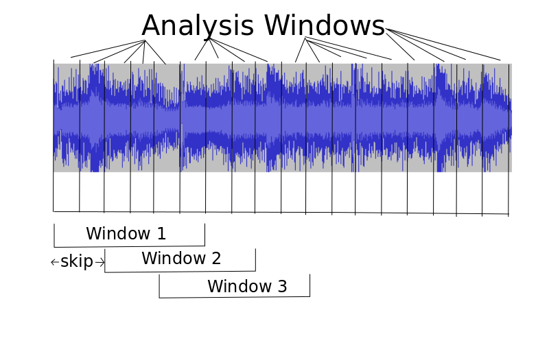
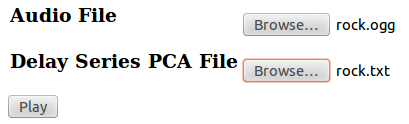

In this mini assignment you will explore an application of "sliding windows and persistence" on time series data (see Jose Perea's paper for more theory). Specifically, you will look at how to transform musical audio data into a high dimension point cloud/curve which can be probed with TDA methods. You will make use of a visualization program called LoopDitty to gain some intuition about what points in various persistence diagrams might mean. Please follow the directions below and submit an electronic writeup to chris.tralie@gmail.com with the answers to all of the questions and any observations you have. Enjoy!
Background
Musical audio is typically sampled at 22050hz (samples per second) or 44100hz. In this assignment, we will be doing a "sliding window" to focus in on small chunks of musical data sampled this way. Each chunk will be summarized with features that store information about pitches (chroma), spectral envelope (MFCC), and timbre of the sound in that chunk, and can be thought of as a point in 59-dimensional space (there are a few extra "timbre" features I didn't talk about in class). Therefore, as we slide a window (mask) from left to right along the song and extract features, a point cloud forms in 59-D, with each chunk as a point.
The terms below are related to this sliding window as follows (they will make more sense to you if you were in class, don't worry so much if you weren't and you don't follow...I'll provide some sample parameters in the problems):
hopSize (integer): The length of the "analysis window" I discussed in class, for analyzing small chunks of the audio (many analysis windows will be averaged together to get each full window). This should generally be 512 for 22050hz audio, and 1024 for 44100hz audio, which corresponds to roughly 23 milliseconds of audio. This is short enough for the frequency statistics to be roughly stationary, but long enough to get a reasonable number of frequency bins when doing the FFT
skipSize (integer): The number of analysis windows to slide over to the next window. Typically 1, but larger if we want to sample fewer windows for computational reasons
windowSize (integer): The number of analysis windows whose means and variances are taken to form the full window. For instance, if we had a hop size of 1024 for 44100hz audio, then a windowSize of 43 would lead to a sliding window with 1024*43 = 44032 samples, which is nearly 1 second of audio (44100 samples).
The figure below shows an example of what this all means. In this example, the skipSize is 2 (the large window slides over by two analysis windows each time), and the windowSize is 6 (6 analysis windows are wrapped into one window)

Getting Started
Click here to download the code and audio files you will need for this assignment. The code is wrapped with TDA tools, which you will need to compute persistence diagrams (Click here to see the user guide for TDA tools written by Paul. The code is also wrapped with the rastamat code package for computing MFCCs and the chroma-ansyn package for computing chroma, both by Dan Ellis.
Be sure that you can load this page in your web browser (you should see the words "loopditty" written in cursive). If you get an error message, please e-mail chris.tralie@gmail.com. This should work in the most recent versions of Chroma and Firefox, and it should work on most of the cluster computers on campus
Make sure you have access to Matlab. Paul will be a better resource about this than me, so please e-mail him if you don't have access to a computer with Matlab, and he will be able to get you setup with a math account
What You Have To Do
Note: Questions you have to answer are highlighted in red
Part 1: Creating and Visualizing Point Clouds with PCA
Open Matlab in the directory where you extracted the code, and type "init". This will setup TDA tools in your Matlab environment
Run the following command:
This command creates the sliding window embedding point cloud for the song "Crazy Train" (22050hz audio) with an analysis window of size 512, a skip size of 1 analysis window (sliding the mask by about 23 milliseconds), and a total window size of 43 analysis windows (about a second of audio). It saves the result in X, which is a 59 dimensional point cloud. It then does PCA on that 59 dimensional point cloud to reduce it to 3 dimensions for visualization, and it outputs two files: rock.ogg (audio) and rock.txt (PCA on the point cloud).
Now go to this page. Load rock.ogg into the audio input bar, and load rock.txt into the "delay series PCA" input bar. You should see something like the picture below:

Now press the "Play" button to play the PCA point cloud, synchronized with the music (click and drag to rotate...also make sure your speakers or headphones are on).
What do you observe? What's going on in the song when the velocity along the curve is faster? What's going on when it stays in one place?
NOTE: Every time you want to load a new song into LoopDitty or restart a song, you need to refresh your browser and reload both the audio file and the PCA file. Even if the browser already displays the names files you want, you need to click and load them again (apologies for the bug)
Repeat steps 2 and 3, changing the windowSize. For instance, run the code
To get a sliding window of size (150*512 samples/(22050.0 samples/second)) = 3.48 seconds. Try smaller windows and larger windows.
Visually, what appears to be the effect of the window size? What happens when the window is too small? What happens when the window is too large? Do you have an explanation for this?
Part 2: 1D Rips on a Song Clip
Now that you have a feel for what this point cloud embedding scheme looks like for the music data, it's time to start analyzing the data quantitatively with TDA tools. The first thing to do is a straight up 1D rips filtration to look for loops. For this we'll be running a small sliding window (512*10/44100 = 0.116 second) to make a few loops pop out. Run the following code (this could take up to a minute depending on your computer):
I contains the 1D rips diagram, and J contains the 0D rips diagram. The birth times are in the first column, and the death times are in the second column. So go ahead and plot the 1D diagram with the following command:
Note that you can also plot it yourself like this:
Now have a look back at loop ditty to visualize and "listen to" the point cloud we just ran through TDA tools (reload rock.txt and rock.ogg).
What do you think the high persistence points in the 1D diagram correspond to in the song? Why do many of the high persistence points seem to have later birth times?
Note that the visualization is in 3D, and it only retains about 29% of the variance. So there's a lot going on in higher dimensions that isn't captured by this visualization. Still, I hope I've demonstrated that it's often helpful to look at this projected visualization for some intuition. I would encourage you on your projects to do the same (look at matlab command pca for a point cloud, or at the command cmdscale for embedding a metric).
Part 3: High Dimensional Morse Filtrations: Rock vs Classical
The next thing to try is slightly fancier. In class I described doing Morse filtrations along equally space directions on a high dimensional sphere. The idea is to do a 0D sublevelset filtration on a curve along many directions, which encodes critical points as births and deaths of connected components. Since the music now needs to be treated as a connected curve, an edge is added for each adjacent point in time so that the point cloud turns into a path (the LoopDitty visualization already did this). In fact, I've written some code in getMorseFiltered0DDiagrams.m to do this. Check it out for more details, especially if you want to do something similar for your project (it uses rca1mfscm in the TDA Tools package).
Now you're going to run these Morse filtrations on 30 second clips from two different musical genres: rock and classical. The code below is contained in the script MorseProblem.m, so simply type "MorseProblem" to run it. The code computes morse filtrations in many different directions on a high dimensional sphere and concatenates the diagrams from each filtration. It then sorts the points in descending order of persistence. Have a look at the plots and also back at LoopDitty to visualize each song (load classical.ogg/classical.txt and rock.ogg/rock.txt)
What is the difference between the distribution of persistence values for each song? Which song has more persistence points, and which song has more high persistence points? Can you explain why based on the audio content of each song?
Part 4: Extra Credit
I've made a web site http://www.loopditty.net, which allows you to visualize music for any song on http://www.soundcloud.com. By default this makes a sliding window of size 5 seconds so that it emphasizes more global patterns. See if you can find a song that has a large visual loop, or some other structure you think you could pick up on with TDA, and comment on it in the comments section of that web site. Also submit your observations as part of your writeup so I know to give you credit!